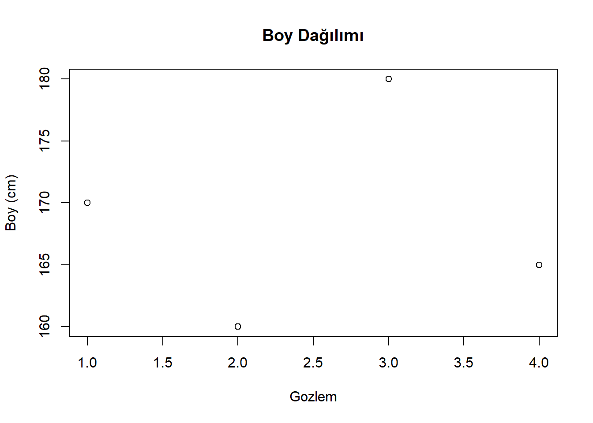
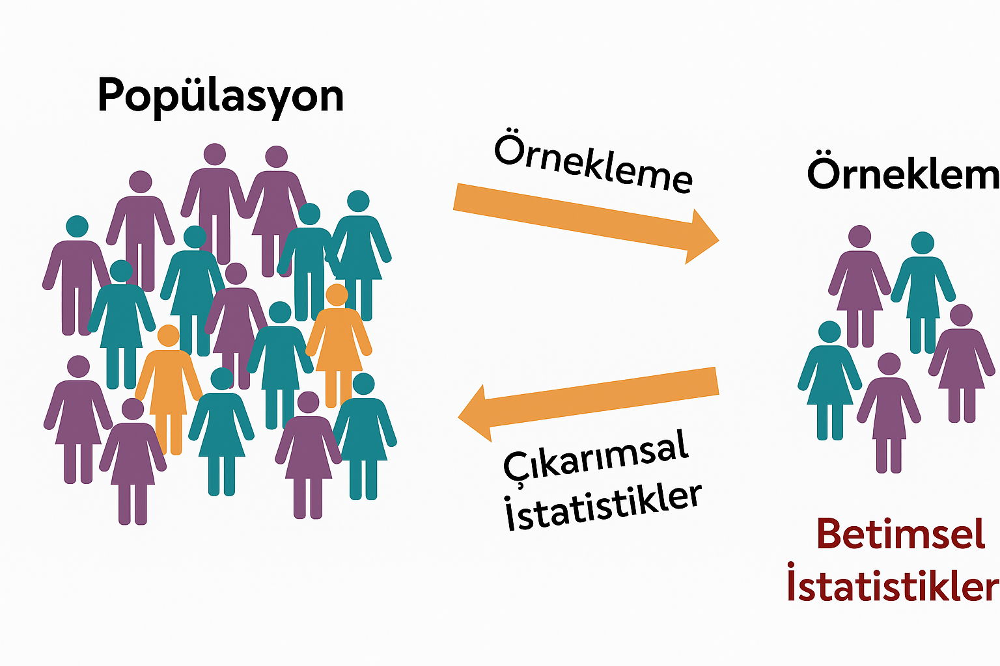
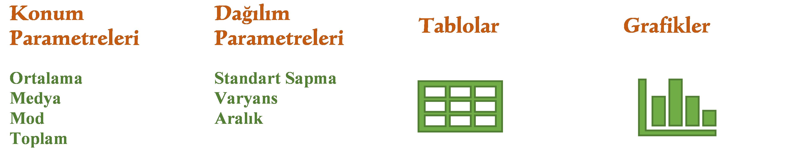
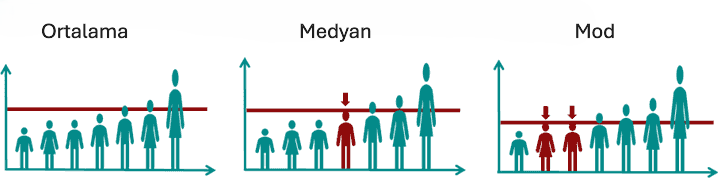
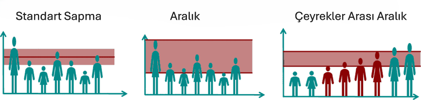
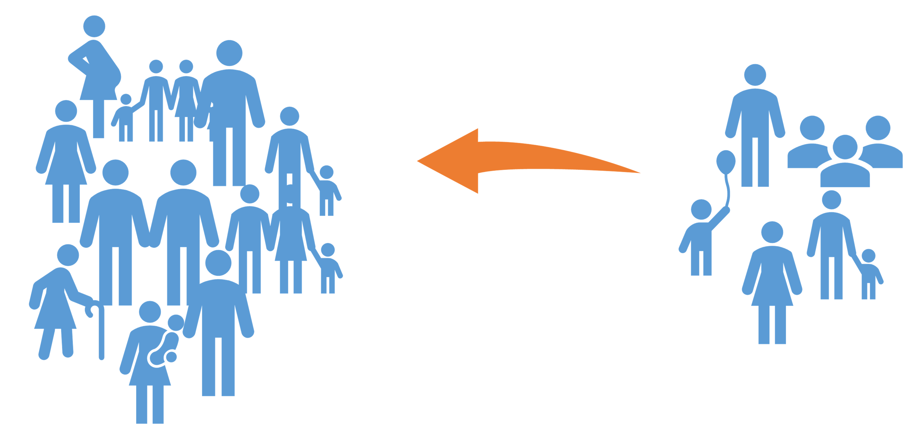
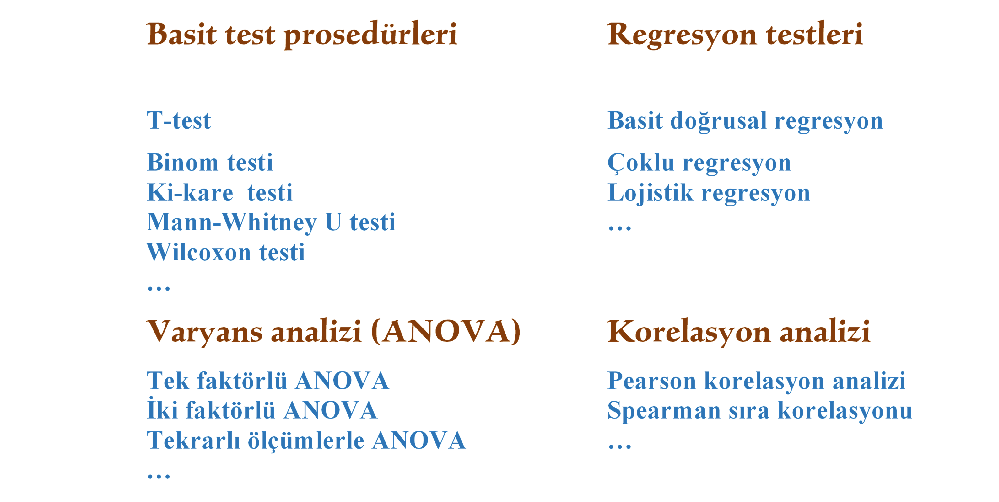
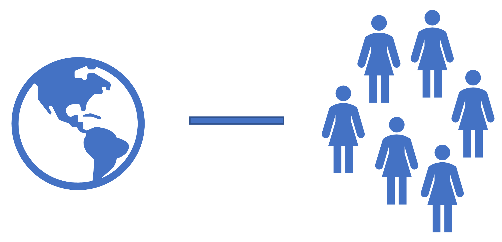
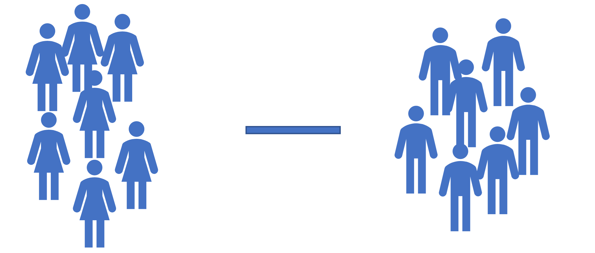

Betimsel ve Çıkarımsal İstatistikler
Betimsel istatistik, çıkarımsal istatistik ve keşifsel istatistik, istatistiğin temel alanlarını oluşturur.
Betimsel (Descriptive) istatistik, eldeki verileri özetlemek ve tanımlamak için araçlar sunar; böylece örneklem hakkında net bir tablo ortaya konur. Örneğin; “Bir sınıftaki öğrencilerin yaş ortalaması 21.4’tür.”
Çıkarımsal (Inferential) istatistik, örneklemden yola çıkarak daha geniş genellemelere ulaşmamıza veya tüm evren hakkında tahminlerde bulunmamıza olanak tanır. Örneğin; “Bir sınıfın yaş ortalamasına bakarak tüm üniversite öğrencilerinin yaş ortalamasını tahmin etmek.”
Keşifsel istatistik (Exploratory) ise veri hakkında ön bilgi edinmek, desenleri ve ilişkileri keşfetmeye yarar. Hipotez kurmadan önce veriyi keşfetmek gibi düşünülebilir. Değişkenler arası ilişkileri sezgisel olarak ortaya koyar (korelasyon matrisleri, scatter plot vb.). Örneğin; “Bir veri setinde hangi değişkenler arasında ilişki olabilir, anlamlı desenler var mı?”
Çıkarımsal istatistik sayesinde örneklemden elde edilen bulgular, daha büyük bir evreni anlamak için kullanılabilir.

Betimsel İstatistik vs. Çıkarımsal İstatistik
İstatistiğin temel amaçlarından biri, bir evren (popülasyon) hakkında çıkarımda bulunmaktır. Ancak çoğu durumda, evrenin tamamına ait verilere ulaşmak mümkün değildir. Bu nedenle, evreni temsil eden bir örneklem seçilir.
Bu örneklem, daha sonra betimsel istatistik kullanılarak analiz edilir. Betimsel istatistik, örneklemin ortalaması ve değişkenliği gibi temel özelliklerini özetlemeye yardımcı olur.
Ancak yalnızca örneklemi betimlemek, tüm evren (popülasyon) hakkında fikir vermez; bu noktada çıkarımsal istatistik devreye girer. Çıkarımsal istatistik, örneklemden yola çıkarak evren hakkında sonuçlar çıkarmayı amaçlar ve örneklemin bilinen özelliklerine dayanarak evrenin bilinmeyen parametrelerini tahmin etmeye çalışır.
Bu nedenle, çıkarımsal istatistik mevcut verilerin ötesine geçerek genellemelere ulaşmayı hedefler. Bunu gerçekleştirmek için t-testi , varyans analizi (ANOVA) veya regresyon gibi hipotez testleri kullanılır.
Betimsel İstatistik (Descriptive Statistics)
Veriler toplandıktan sonra yapılacak ilk işlemlerden biri, bu verilerin grafikle gösterilmesi, ortalamanın hesaplanması ve dağılımların genel bir görünümünün elde edilmesidir. Bu, betimsel istatistiklerin görevidir.
Dolayısıyla, betimsel ististiklerin amacı, veri setlerinin dağılımı hakkında genel bir bakış sağlamaktır. Betimsel istatistik, veri setlerini tanımlamak ve görselleştirmek için kullanılır.
Betimsel istatistik terimi, verilerin istatistiksel özellikler, grafikler, tablolar veya diyagramlar yoluyla tanımlanmasına yönelik yöntemleri kapsar.
Burada önemli olan nokta, yalnızca ilgili örneklemin özelliklerinin tanımlanması ve değerlendirilmesidir. Ancak bu aşamada farklı zaman noktalarına veya evrene (popülasyona) dair herhangi bir çıkarım yapılmaz. Bu, çıkarımsal istatistiğin alanına girer.
Betimsel istatistiğin alt başlıkları genel olarak şu şekilde özetlenebilir:
Merkezi eğilim ölçüleri (ortalama, medyan, mod)
Dağılım ölçüleri (standart sapma, varyans, çeyrekler arası aralık)
Frekans tabloları
Grafiksel gösterimler (histogramlar, kutu grafikleri vb.)

Betimsel istatistik, hangi sorunun sorulduğuna ve hangi ölçme düzeyinin kullanıldığına bağlı olarak, tablolar ve grafikler kullanılır. Bunlar arasında en bilinenleri şunlardır:
Konum (merkezi eğilim) ölçütleri: Aritmetik ortalama, medyan, mod, toplam
Dağılım ölçütleri: Standart sapma, varyans, açıklık (range)
Tablolar: Mutlak (kesin) frekans, bağıl (göreli) frekans ve kümülatif (birikimli) frekans tabloları
Grafikler: Histogramlar, çubuk grafikler, kutu grafikleri (boxplot), saçılım (scatter) grafikleri, matris grafikler
Betimsel istatistiğin ilk grubu, ortalama ve mod gibi konum (merkezi eğilim) ölçütleridir. Bu ölçütler, veri setinin merkezi eğilimini ifade etmek için kullanılır. Yani örneklemin merkezinin nerede olduğunu ya da örneklemin büyük bir kısmının hangi değerler etrafında toplandığını gösterirler.

İkinci grup ise dağılım ölçütleridir. Bu ölçütler, bir örneklemdeki değişkenin değerlerinin birbirinden ne kadar farklılaştığı hakkında bilgi verir. Yani, bir değişkenin değerlerinin ortalamadan ne kadar sapma gösterdiğini açıklar:
Değerler birbirine yakınsa, yani benzerse, dağılım düşüktür.
Değerler birbirinden uzaksa, yani çok farklıysa, dağılım yüksektir.
Bu durumu açıklamak için klasik bir örnek: standart sapmadır. Standart sapma, veri değerlerinin ortalama etrafında ne kadar yayıldığını gösteren temel bir dağılım ölçüsüdür.

Verileri tanımlamak için hangi merkezî eğilim (location) ya da dağılım (dispersion) ölçütlerinin uygun olduğu, değişkenin ölçme düzeyine bağlıdır. Bu noktada, değişkenin ölçüm düzeyine göre üç ana kategoriye ayrım yapabiliriz:
Metrik ölçek (sayısal)
Sıralı (ordinal) ölçek
Nominal (isimsel) ölçek
| Cinsiyet | Boy (cm) |
|---|---|
| Erkek | 170 |
| Kadın | 160 |
| Erkek | 180 |
| Kadın | 165 |
| Cinsiyet | n | % |
|---|---|---|
| Kadın | 106 | 48 |
| Erkek | 109 | 52 |
Çoğu zaman bir frekans tablosunu Tablo 1 (b) akademik makalelerde genelde bu şekilde görebilirsiniz.
Boy dağılımlarını basit bir şekilde plot grafiğini (Şekil 1) çizecek olursak da aşağıdaki gibi görselleştirebiliriz.
Cinsiyetlere göre tanımlayıcı istatistikleri daha daha da detaylandırırsak örneklem hakkında daha fazla bilgiye sahip olabiliriz. Bu aşama bize hipotez testlerinden önce verimizi keşfetmemizi sağlıyor. Aşağıdaki Tablo 2 ’de kadın ve erkeklerin boy ortalamaları, standart sapmaları, minimum ve maksimum değerleri, ve aralıkları verilmiştir.
Grup N Ortalama S Medyan Min Maks Aralik
1 Erkek 2 175.0 7.071068 175.0 170 180 10
2 Kadın 2 162.5 3.535534 162.5 160 165 5Çıkarımsal İstatistik (Inferential Statistics)
Çıkarımsal istatistik nedir?
Betimsel istatistiğin aksine, çıkarımsal istatistik tüm evren (popülasyon) hakkında bir çıkarımda bulunmak ister. Ancak çoğu durumda tüm popülasyonu incelemek neredeyse imkânsızdır. Bu nedenle popülasyonu temsil eden bir örneklem (yani popülasyondan alınan küçük bir veri seti) kullanılır. Bu örneklem aracılığıyla popülasyon hakkında istatistiksel bir yorum yapılabilir.
Örneğin, tüm Türkiye vatandaşlarından oluşan bir popülasyondan 1.000 kişilik bir örneklem alındığında, bu örneklem üzerinden tüm Türkiye vatandaşları hakkında çıkarım yapılabilir.

Popülasyon hakkında hangi türde bir çıkarım yapılmak istendiğine ya da hangi soruya cevap aranacağına bağlı olarak, farklı istatistiksel yöntemler veya hipotez testleri kullanılır.
En bilinenler arasında, gruplar arası farkların test edilmesini sağlayan hipotez testleri yer alır. Örneğin:
t-testi
Ki-kare testi (chi-square test)
Varyans analizi (ANOVA)
Bunların yanında, değişkenler arasındaki ilişkilerin test edilmesini sağlayan hipotez testleri de vardır. Örneğin:
Korelasyon analizi
Regresyon analizi
Bu testler, popülasyon hakkında çıkarım yapmak için örneklemden elde edilen verilere dayalı istatistiksel analizler sunar.

Çıkarımsal İstatistik Örneği
Yukarıdaki örneğin 10 basketbolcudan oluşan bir örneklem olduğunu düşünelim. Önceki verdiğimiz bilgiler betimsel istatistiğin görevidir.
Ancak eğer tüm popülasyon hakkında bir çıkarım yapmak istiyorsanız, o zaman çıkarımsal istatistik devreye girer.
Örneğin şu soru ilgi çekici olabilir:
“Basketbolcular, genel erkek nüfusuna kıyasla daha uzun mu?”
Bu hipotezi test etmek için t-testi uygulanır.
t-testi, örneklemin ortalamasını, popülasyonun ortalamasıyla karşılaştırır.
Bu sayede, gözlemlenen farkın istatistiksel olarak anlamlı olup olmadığı belirlenebilir.


Genel olarak tek örnekleminiz olduğunda ve önceden değerleri bilinen bir evrenle karşılaştırma yapıldığında (Şekil 2 (a)), tek örneklem t-testi (one-sample t-test) kullanılır. Öte yandan iki örneklemli grup karşılaştırıldığında (Şekil 2 (b)), bağımsız örneklemler t-testi (independent-samples t-test) uygulanır.
Ayrıca bağımsız örneklem t-testi için de şu soru sorulabilir:
“Basketbolcular, futbolculardan daha mı uzundur?”
Bu amaçla bir grup futbolcudan oluşan bir örneklem alınır ve ardından basketbolcuların ortalama boyu ile futbolcuların ortalama boyu karşılaştırılır. Bu karşılaştırma, bağımsız örneklemler için t-testi (independent t-test) kullanılarak yapılır.
Bu test sayesinde artık şu türden bir çıkarımda bulunmak mümkündür:
“Basketbolcular, popülasyon düzeyinde futbolculardan daha uzun mudur, değil midir?”
Ancak bu çıkarım yalnızca örneklemlere dayanılarak yapılmaktadır.
Dolayısıyla, sadece bu örneklemde basketbolcuların daha uzun çıkması tamamen bir rastlantı da olabilir.
Bu nedenle, yapılan çıkarım belirli bir olasılık düzeyinde (örneğin %95 güvenle) desteklenebilir ya da reddedilebilir; ama kesin bir yargıya varmak mümkün değildir.
Betimsel ve Çıkarımsal İstatistik Örneği
Bir sosyal hizmet kurumu, madde bağımlılığıyla mücadele eden bireylerin çok fazla depresyona maruz kaldığını tespit etmiş ve bu grup için yeni bir danışmanlık programı geliştirmiştir. Programın etkili olup olmadığını değerlendirmek amacıyla 200 danışan programa katılmış ve müdahale öncesi ile sonrası depresyon düzeyleri ölçülmüştür.
Betimsel istatistik kapsamında, danışanların programdan önceki ve sonraki depresyon puanları arasındaki ortalama fark hesaplanmış, ortalama düşüş 15 puan, standart sapma ise 5 puan olarak bulunmuştur. Ayrıca, katılımcıların depresyon puanlarındaki değişim düzeylerini görselleştirmek için bir frekans dağılım grafiği hazırlanmıştır. Bu analizler, örneklem grubundaki iyileşmenin genel bir görünümünü sunar fakat anlamlı bir azalıştan bahsetmez.
Çıkarımsal istatistik kapsamında ise bu değişimin tesadüfi olup olmadığını test etmek için bağımlı örneklemler t-testi (paired samples t-test) uygulanmıştır. Çünkü burada aynı bireylerin müdahale öncesi ve sonrası ölçümleri karşılaştırılmaktadır.
Alternatif olarak, eğer müdahale programına katılan grup ile katılmayan ayrı bir kontrol grubu karşılaştırılmış olsaydı, o zaman bağımsız örneklemler t-testi (independent samples t-test) kullanılacaktı.
Yapılan analiz sonucunda, gözlenen 15 puanlık düşüşün istatistiksel olarak anlamlı olduğu belirlenmiş ve %95 güven aralığı 13–17 puan arasında hesaplanmıştır. Bu da, programın yalnızca bu örneklemde değil, genel danışan popülasyonu için de etkili olabileceği yönünde bir çıkarım yapılmasına imkân tanımaktadır.
Buradaki gruba hem müdahaleden önce test yapılmış hem de müdahaleden sonra test yapıldığı için aynı gruptur. Yani bunlar bağımsız gruplar değildir. Bundan dolayı bağımlı grup t-testi gerçekleştirilmiştir. Eğer kontrol grubu yani hiçbir müdahale yapmadığımız bir grup ile kıyaslasaydık o zaman bağımsız örneklem t-testi gerçekleştirecektik.